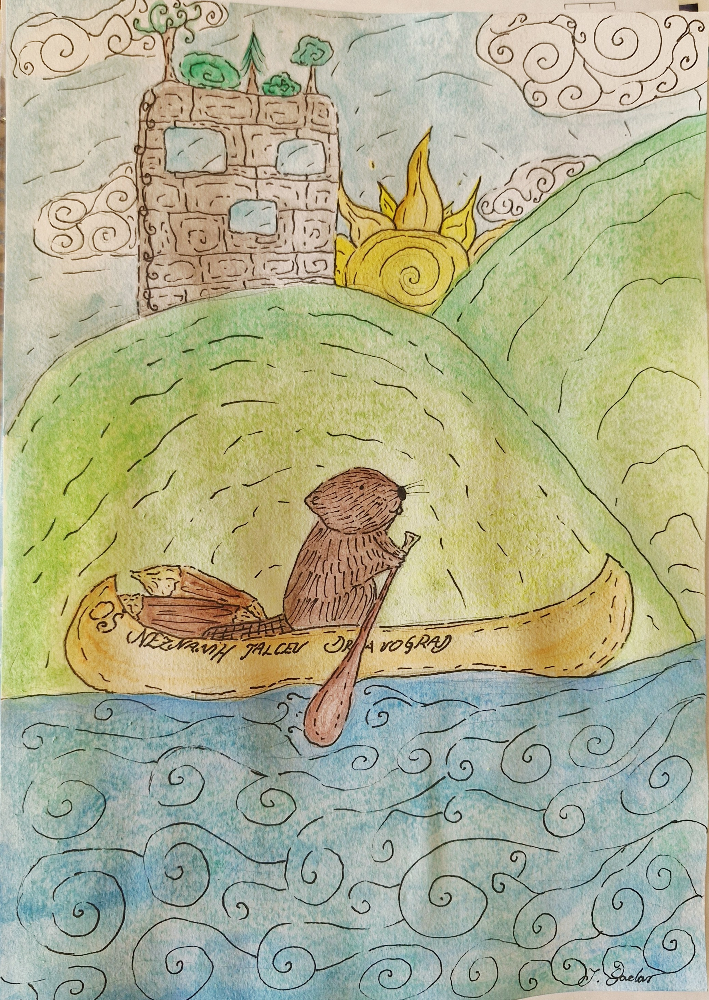
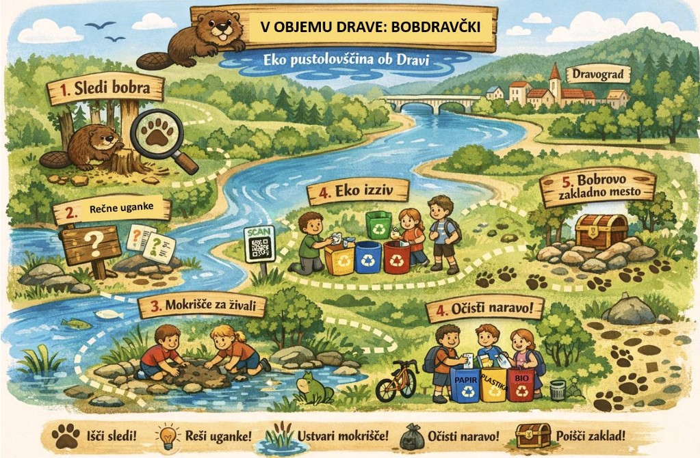

V OBJEMU DRAVE: BOBDRAVČKI
Igra je nastala v okviru 40. festivala Turizmu pomaga lastna glava z naslovom AQUAVIBE – Prepustimo se toku!
Učenci smo raziskovali, kako bi lahko reko Dravo v Dravogradu predstavili kot privlačen prostor za preživljanje prostega časa za družine in turiste.
Pri razmišljanju o idejah smo se osredotočili na živali ob reki in izbrali bobra, ki je pomemben prebivalec tega okolja.
Tako je nastala ideja o Bobdravčkih – bobrih kot simboličnih varuhih reke Drave.
Eko pustolovščina povezuje učence, lokalno skupnost in bližnjo naravo ter obiskovalcem tako približa pomen reke Drave in poudari pomen sobivanja človeka z naravo.
Posebna vzgojno-izobraževalna nota pa je na trajnostnem turizmu, spoštovanju narave ter ozaveščanju o varovanju okolja.

